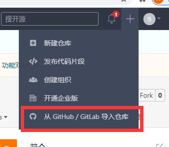

6. GIT 技巧总结
6.1. 如何将自己fork的代码更新到最新的代码
作者[Thomas]
我们经常会遇到自己之前做的项目突然就跟不上主分支了。这个时候我们只要按照以下步骤来操作即可。
我们以RT-Thread来举例说明
第一步，将RT-Thread官方路径添加到upstream中
git remote add upstream https://github.com/RT-Thread/rt-thread.git
第二步，将官方的最新代码更新下来
git fetch upstream
第三步，将最新的代码下载同步下来，
git checkout upstream/master
第四步，创建一个本地的分支
git checkout -b new_master
第五步，这个时候我们就拥有了最新的代码的分支，提交到github上面去
git push origin new_master:old_master
这边需要注意的是，上面的命令old_master如果是你fork仓库中已经有的分支，需要加-f来强制push。如果是一个新的分支则你的fork仓库会创建一个分支，这个时候就是最新的代码了。
第六步，以下可以操作，也可以不用操作。并不是必须的，强迫症患者可以看下。
如果你有强迫症的话，想让你fork仓库的master更新到最新的话。
git push origin new_master:master -f
如果还有强迫症的话，可能需要把本地的master分支给删了（因为这个是旧的）
git branch -D master
如果你还有强迫症的话，可以删除调upstream，看起来似乎干净一些
git remote remove upstream
6.2. TODO
6.2.1. git如何删除远端分支
当遇到github上面远端分支需要删除的时候，我们使用下面命令
找到对应的branch
git branch -a
删除远端branch
git push origin --delete xxx_dev
6.3. git如何添加submodule
如果引用第三方库的话，可以使用下面命令添加submodule
git submodule add https://xxx.git
删除第三方库：
git submodule deinit <submodule-name>
6.4. github国内如何快速更新代码
本章节主要通过gitee快速方便的更新代码
6.4.1. 情况一：第一次下载
第一次下载的时候，比如RTTHREAD master上面的源码，
可以先在gitee上面建个仓库

从这里导入仓库地址 https://github.com/RT-Thread/rt-thread.git
导入之后就可以下载了
6.4.2. 情况二， PR一次之后如果需要将RTTHREAD更新到最新的
可以按照上面的来更新到最新的branch
6.4.3. 情况三，本地fork的分支已经在远端更新了，但是本地git pull太慢
这种情况，主要原因是因为github没有同步按钮，先将gitee上面的老的分支先同步一下，
然后把gitee的branch先fetch下来
git fetch giteestream
这样本地就有新的代码了，
之后再执行git pull
会发现很快就更新完成了。
6.4.4. git如何合并之前的提交
有时候PR的时候，我们会有很多无用的提交，这些提交如果保留也会增大codesize的，所以尽量PR的时候尽可能少的commit提交。
git rebase命令格式：
git rebase -i [startpoint] [endpoint]
先要合并可以用下面的命令：
//合并当前的head 到某个commit XXXX
git rebase -i xxxx
//合并最近两次提交
git rebase -i HEAD~2
执行这个命令之后，有个vi编辑器
里面有提示
里面的提示有： pick：保留该commit（缩写:p） reword：保留该commit，但我需要修改该commit的注释（缩写:r） edit：保留该commit, 但我要停下来修改该提交(不仅仅修改注释)（缩写:e） squash：将该commit和前一个commit合并（缩写:s） fixup：将该commit和前一个commit合并，但我不要保留该提交的注释信息（缩写:f） exec：执行shell命令（缩写:x） drop：我要丢弃该commit（缩写:d）
把pick改为squash就是可以把commit合并到前面一个commit
其他的可以根据提示修改。
然后:wq保存就可以了。
修改commit的时候一定要小心，不要把别人的commit修改了。看清楚那几个commit要合并的。
6.4.5. github如何贡献代码
6.4.6. github如何修改代码之后再次提交
这个只要PR之后，在原来分支上直接提交。PR的时候也会
6.4.7. git如何正确使用分支
6.4.8. git的原理本质
6.4.9. git如何正确管理自己的仓库和分支
原则一： 将比较大的repo仓库统一管理，方便维护
6.4.10. git通用行为准则
每次提交新的代码之前，最好先下载最新的代码，git pull，之后再提交。
完成功能的可以是一个仓库，提交代码的可以是一个仓库（防止错改），代码提交PR之后，就可以删掉原来的仓库了。通常可以两个仓库来回切换
代码提交完了或者merge之后，自我验证一下，防止有些文件没有add上去。
代码的commit尽量整理修改为有效的commit（删掉一些无用的commit，这些会占codesize），参考上面如何修改提交。
尽量新建一个branch添加功能
PR之后，自己先检查一遍文件是否正确（尽量不要直接等审核人员检查，因为有些文件，可能只有你自己知道是否正确）
6.4.11. GIT PR之后如何修改作者名称
如果遇到PR之后，签CLA一直签不了，用下面命令
git commit --amend --no-edit --author="User Name <user@exmaple.com>"